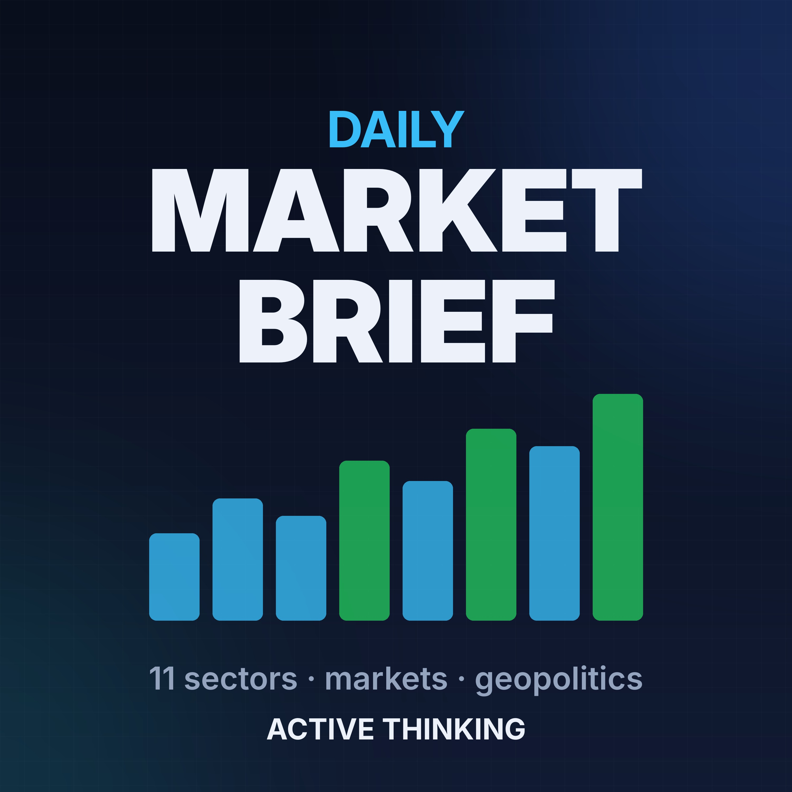

Daily Market Brief
by Active Thinking
The markets, all 11 sectors and the geopolitics that matter, in about ten minutes. Every episode covers the latest US market close, the most important story in each sector, and what it means for investors, with every source linked.
Market overview
The S&P 500, the main market driver, and which sectors led and lagged.
All 11 sectors
One story per sector: what happened, why it matters, and what to watch next.
Geopolitics
Trade, energy, supply chains and the relationships that move the US economy.
Sources included
Original reporting is credited and linked in every episode's description.
When new episodes come out
- Tuesday to Saturday, around 09:30 Madrid time, covering the previous US trading day.
- No episode after US market holidays.
- Data and analysis come from Market Brief.
Daily Market Brief provides news and commentary for informational purposes only and does not constitute professional financial or investment advice. Listeners are responsible for their own investment decisions. Active Thinking does not provide personalised investment recommendations. Episodes are written with AI assistance from cited sources and narrated by an AI voice.